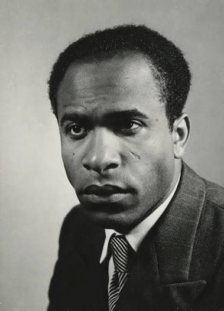

Frantz Fanon
Psiquiatra, filósofo e pensador da luta anticolonial. Martinica, 1925 – 1961.
Conhecer a história
Imagem do hero(coloque o link no src)
Biografia
Frantz Omar Fanon nasceu em 20 de julho de 1925, em Fort-de-France, na Martinica, então colônia francesa no Caribe. Cresceu numa família de classe média e estudou no Liceu Schoelcher, onde teve aulas com o poeta Aimé Césaire, que o marcou profundamente.
Em 1943 deixou a ilha e se alistou nas Forças Francesas Livres para lutar contra o nazismo. Foi ferido em combate e condecorado, mas no exército encontrou o racismo dentro da própria França, que dizia defender a liberdade.
Depois da guerra estudou medicina e psiquiatria em Lyon. Em 1952 publicou Pele Negra, Máscaras Brancas. Em 1953 foi trabalhar na Argélia, onde chefiou um setor do hospital psiquiátrico de Blida-Joinville e, com a guerra de independência, passou a apoiar a Frente de Libertação Nacional (FLN).
Morreu em 6 de dezembro de 1961, aos 36 anos, vítima de leucemia, poucos meses antes da independência da Argélia.

- 1925Nasce em Fort-de-France, Martinica.
- 1943Deixa a ilha e se junta às Forças Francesas Livres.
- 1952Publica Pele Negra, Máscaras Brancas.
- 1953Assume um setor do hospital de Blida-Joinville, na Argélia.
- 1956Deixa o hospital e passa a atuar pela independência argelina.
- 1961Publica Os Condenados da Terra e morre em dezembro.
A psicologia da colonização e o racismo em Pele Negra, Máscaras Brancas
Em Pele Negra, Máscaras Brancas, Fanon usa a psiquiatria para explicar como o colonialismo adoece quem é colonizado. Para ele, o racismo não é apenas preconceito individual: é um sistema que ensina a pessoa negra a se enxergar pelos olhos do branco.
A “máscara branca” é a tentativa de ser aceito por uma sociedade que valoriza o que é branco, desde a língua e as roupas até o jeito de falar. Isso gera sentimento de inferioridade, vergonha e divisão interna.
Fanon defende que o problema não está na vítima, mas na estrutura social que a oprime. Por isso, a cura exige mudar a sociedade e também libertar a mente, num processo que ele chama de desalienação.

Seção multimídia
Curiosidades
- Fanon morreu aos 36 anos, mas deixou obras que são lidas no mundo todo.
- Ele foi aluno de Aimé Césaire, um dos grandes nomes do movimento da negritude.
- Sua primeira tese de medicina foi recusada, e ele a transformou em Pele Negra, Máscaras Brancas.
- Em Blida, mudou o tratamento dos pacientes, trocando o isolamento por atividades em grupo.
- O livro Os Condenados da Terra tem prefácio do filósofo Jean-Paul Sartre.
- Nasceu na Martinica, viveu na França, na Argélia e na Tunísia, e foi representante do governo provisório argelino em Gana.

Atualmente
Mais de seis décadas depois, as ideias de Fanon continuam em debate. Seus livros são estudados em psicologia, sociologia, filosofia e educação, e inspiram o pensamento decolonial e a luta antirracista.
No Brasil, suas ideias aparecem nas discussões sobre racismo estrutural, identidade negra e saúde mental da população negra, e são lidas por pesquisadores e pelo movimento negro.
Fanon nos lembra que combater o racismo exige olhar para a sociedade, para a história e para o modo como cada pessoa aprende a se ver.